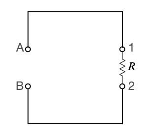
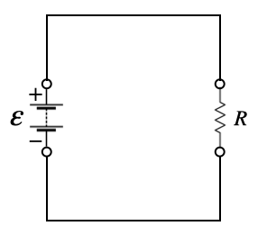

D4.4 Electromotive Force and Circuit#
D4.4.1 Motivation: Electromotive Force and Complete Circuits#
Imagine imposing an external electric field across an isolated straight wire. Positive charges are driven toward one end of the wire, while negative charges move toward the opposite end. For a brief moment, a current exists.
As charge accumulates at the ends of the wire, however, the separation of positive and negative charges creates a polarization electric field inside the conductor. This induced field opposes the externally applied electric field. Very quickly, the two fields cancel, the net electric field inside the wire becomes zero, and the current ceases to exist.
This simple thought experiment highlights a crucial point:
an electric field alone cannot sustain a steady current in an isolated conductor.
For a steady current to persist, charges must be continuously driven around a closed path, and energy lost by the charges must be continuously replenished. This requires a closed system that includes an external energy source capable of doing work on the charges.
That energy source is called the electromotive force (EMF). Despite its name, EMF is not a force. It represents the energy supplied per unit charge by a device such as a battery, generator, or power supply. The EMF raises the electric potential energy of charges, allowing them to circulate through the circuit, lose energy in resistive elements, and then be re-energized.
In a complete circuit:
EMF sources add energy to the charges,
resistive elements remove energy from the charges,
and conducting paths allow continuous charge flow.
Understanding steady currents therefore requires viewing the circuit as a whole and carefully accounting for energy gains and losses around a closed loop. This perspective sets the stage for analyzing simple DC circuits, defining power, and distinguishing between energy supplied by sources and energy dissipated by resistive elements.
D4.4.2 Basic Circuit#
We now combine the ideas of current, resistance, Ohm’s law, and electromotive force to analyze the simplest possible electrical system: a single resistive element connected by ideal conductors.
Open Resistive Circuit#
We begin with an open circuit consisting of a resistive element connected by conducting segments, with open terminals labeled A and B.

Conducting Segments (Straight Lines)#
The straight lines represent conducting elements whose purpose is to connect circuit components. In ideal circuit analysis, these elements:
have negligible resistance,
do no work on the charges, and
are at the same electric potential along each continuous segment.
In physical circuits, these elements are wires. If wires are very long or very thin, their resistance may no longer be negligible and must then be included explicitly.
Resistive Element#
The resistive element, represented by \(R\), is the part of the circuit where energy is transferred from moving charges to the surroundings. While all real materials have some resistance, components intentionally designed to dissipate energy are called resistors or loads. Examples include light bulbs, heating elements, and household appliances.
Energy Perspective in the Open Circuit#
Consider a positive charge located at point A with a certain amount of electric potential energy.
As the charge moves from A to Point 1, its energy remains unchanged because the conducting segments are ideal and non-resistive.
As the charge moves from Point 1 to Point 2, it passes through the resistive element and loses energy due to interactions with the material.
From Point 2 to B, the charge again travels through ideal conductors and experiences no additional energy change.
When the charge arrives at point B, it has less energy than it had at point A.
If we interpret points A and B as energy states, this open circuit presents a fundamental problem:
there is no mechanism to return the charge to its original energy state at A. Without an external energy source, sustained charge motion is impossible.
Closed Circuit with an EMF Source#
To maintain a steady current, we must insert an energy source between points A and B. This source provides energy to the charges, restoring them to a higher potential energy state.

This energy source is the electromotive force, denoted by \(\mathcal{E}\). With the EMF in place, the circuit becomes closed, and a steady-state current can be sustained.
Energy Transfers in a Closed Circuit#
In a closed circuit, two distinct energy processes occur simultaneously:
Energy Loss (Resistive Element)#
As charge passes through the resistive element, electric potential energy is converted into other forms (primarily thermal energy). The potential difference across the resistor is given by Ohm’s law:
Resistive Voltage Drop
Energy Gain (EMF Source)#
As charge passes through the EMF source, work is done on the charge, increasing its electric potential energy. The corresponding potential rise is
In real sources, such as batteries and generators, the EMF source itself has an internal resistance \(r\). In that case, the potential difference available to the external circuit is reduced:
Key Physical Insight#
A steady current exists only when:
energy lost in resistive elements is continuously replenished by an EMF source, and
the circuit forms a closed loop.
From this point forward, circuit analysis becomes an exercise in energy accounting: tracking where energy is gained, where it is lost, and how it flows through the system.
D4.4.3 Power in Circuits#
As a positive charge moves through a circuit element, changes in electric potential are associated with changes in electric potential energy. For a charge \(q\) moving across a potential difference \(\Delta V\), the change in electric potential energy is
Work done by the electric field on the charge is related to this energy change by
so the work done on the charge is
When a positive charge moves through a resistive element, the electric potential decreases in the direction of motion, meaning \(\Delta V < 0\). As a result, the work done by the electric field on the charge is positive.
At first glance, one might expect this work to increase the kinetic energy of the charge. However, this does not occur in a steady-state circuit. The amount of charge entering a resistive element per unit time must equal the amount leaving it, so there can be no net buildup of kinetic energy.
Instead, the work done by the electric field is transferred to the resistive material through microscopic interactions between charge carriers and the atomic lattice. This energy transfer is analogous to work done against friction and appears primarily as thermal energy.
Definition of Electrical Power#
Power is defined as the rate at which energy is transferred:
For an amount of charge \(\Delta Q\) passing through a potential difference \(\Delta V\), the change in electric potential energy is
so the work done by the electric field on the charge is
Dividing by \(\Delta t\) and recognizing that \(I = \Delta Q / \Delta t\), the power delivered to the charge is
Sign Convention and Physical Interpretation#
The minus sign in this expression does not mean that power delivered to a circuit element is physically negative. Instead, it reflects the sign convention used for potential difference.
For a resistive element, electric potential decreases in the direction of current flow. If \(\Delta V_R\) is defined in the direction of the current, then
Substituting into the power expression,
the two negative signs cancel, and the power transferred to the resistor is positive. This positive value represents energy transferred from the charges to the material, primarily as thermal energy.
In steady-state circuits, the net power delivered to the charges is zero: energy gained from sources is exactly balanced by energy lost elsewhere. This leads us to identify a power loss associated with resistive elements.
Resistive Power Loss
In practice, power dissipation calculations typically use the magnitude of the voltage drop across a resistive element to avoid sign confusion.
Equivalent Forms of Resistive Power#
Using Ohm’s law, \(\Delta V_R = IR\), the resistive power loss can be written in several equivalent and commonly used forms:
Physical Interpretation#
Electrical power quantifies how fast energy is transferred in a circuit.
In resistive elements, this energy is transferred from moving charges to the material as thermal energy.
The different power expressions emphasize different viewpoints: current-driven, voltage-driven, or material-driven behavior.
This understanding of power completes the energy-based description of simple DC circuits and prepares us for analyzing real devices and energy consumption.
Example — Power Loss in Transmission Lines and the Role of High Voltage
Electric power generated at a power plant must be transmitted over long distances to consumers. The transmission lines have a finite resistance, which leads to power loss in the form of heat.
Suppose electrical power is transmitted through a pair of transmission lines with a total resistance \(R = 5.0~\Omega\). The power station needs to deliver \(P = 1.0 \times 10^{6}~\text{W}\) (1 MW) to a city.
Case 1: Low-Voltage Transmission
Assume the power is transmitted at a voltage of
\(V = 10~\text{kV}\).
Step 1: Find the current
Power delivered is
so the current is
Step 2: Compute the power loss in the transmission lines
The resistive power loss is
Substitute values:
This corresponds to a loss of 50 kW, or 5% of the transmitted power.
Case 2: High-Voltage Transmission
Now assume the same power is transmitted at a much higher voltage of
\(V = 200~\text{kV}\).
Step 1: Find the current
Step 2: Compute the power loss
The power loss is now only 125 W, which is negligible compared to the delivered power.
Physical Interpretation
For a fixed delivered power, increasing the transmission voltage reduces the current.
Resistive power loss depends on the square of the current:
\[ P_{\text{loss}} \propto I^2. \]A modest reduction in current leads to a dramatic reduction in energy loss.
This is why electrical power is transmitted at very high voltages and relatively low currents. Transformers are used to step voltage up for transmission and step it down again for safe use by consumers.
High-voltage transmission minimizes energy loss, reduces heating of power lines, and allows efficient delivery of power over long distances.
Box Activity 1 — Ohm’s Law and Power
A resistor of resistance \(R = 18~\Omega\) is connected to an ideal battery that maintains a constant potential difference of \(\Delta V = 9.0~\text{V}\) across the resistor.
Work through the following:
Current through the resistor
Use Ohm’s law to determine the current:\[ I = \frac{\Delta V}{R}. \]Energy per coulomb
The voltage tells you how much energy is transferred per unit charge.
How many joules of energy are transferred when \(1.0~\text{C}\) of charge passes through the resistor?Power (energy per time)
The power dissipated by the resistor is\[ P_{\text{loss}} = I\,\Delta V. \]Compute the power dissipated.
Check with equivalent forms
Verify that your power result matches both of these:\[ P_{\text{loss}} = I^2R \qquad \text{and} \qquad P_{\text{loss}} = \frac{(\Delta V)^2}{R}. \]Interpretation
In one or two sentences, explain why the energy transfer shows up mainly as thermal energy in the resistor rather than as increased kinetic energy of the charges.
A Possible Solution Guide
Step 1: Current
Step 2: Energy transferred per coulomb
A voltage of \(9.0~\text{V}\) means
So when \(1.0~\text{C}\) passes through the resistor, the energy transferred is
Step 3: Power dissipated
Step 4: Check with equivalent forms
Using \(P_{\text{loss}} = I^2R\):
Using \(P_{\text{loss}} = (\Delta V)^2/R\):
All three methods agree.
Interpretation
The resistor dissipates electrical energy because charge carriers constantly collide with the atomic lattice. The electric field does work on the charges, but that energy is quickly transferred to the material as thermal energy, so the charges do not build up kinetic energy in steady-state flow.
Box Activity 2 — How Hot Does the Resistor Get?
A resistor with resistance \(R = 18~\Omega\) (from the previous activity) dissipates electrical power when connected to a \(9.0~\text{V}\) battery.
Assume the resistor has a mass of \(m = 5.0~\text{g}\) and is made of a material with a specific heat capacity \(c = 380~\mathrm{J/(kg·K)}\).
Assume, for simplicity, that all electrical energy dissipated goes into heating the resistor and that no energy is lost to the surroundings.
Work through the following:
Power dissipated
Use your previous result to determine the power dissipated by the resistor.Energy transferred over time
If the resistor operates for \(t = 60~\text{s}\), how much thermal energy is transferred to it?Temperature change
Use the thermal energy relation\[ Q = mc\Delta T \]to determine the change in temperature of the resistor.
Interpretation
Comment on whether this temperature rise seems realistic for a real resistor operating in air.
A Possible Solution Guide
Step 1: Power dissipated
From the previous activity,
Step 2: Thermal energy transferred
Power is energy per time, so the total energy transferred in \(60~\text{s}\) is
Step 3: Temperature change
Convert mass to kilograms:
Now solve for the temperature change:
Step 4: Interpretation
A temperature increase of over \(100~^\circ\text{C}\) in one minute is quite large. In reality, resistors lose energy to the surroundings through conduction, convection, and radiation, so the actual temperature rise would be smaller.
This result explains why resistors are rated for maximum power dissipation and why high-power resistors often include heat sinks or are designed with larger surface areas. Typical resistors in electrical circuits have power rating is \(0.25\) W.